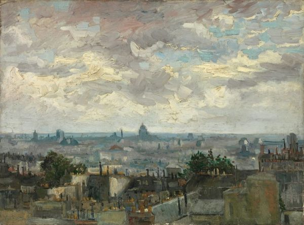

Art
-
Irises
He was looking for a powerful color contrast. By putting the purple flowers against a yellow background, the decorative forms came out extra bright. The irises were originally purple. The flowers became blue because of the bleaching of a red pigment. Van Gogh painted the bouquet twice.
Made in Saint-Rémy-de-Provence.
-
Cornfield Under Thunderstorm

In these landscapes, Van Gogh tried to express sadness, extreme loneliness. However, the overwhelming emotions that Van Gogh experienced in nature were also positive. To his brother, Theo, he wrote: I'm almost certain that within the canvases, I worded what I couldn't express in words, nl. How healthy and heart strengthening I find this countryside. This was made in his last weeks.
Made in Auvers-sur-Oise.
-
Digging Farmer
For a long time, Van Gogh struggled with the display of figures. they looked too flat. In 1885, he discovered that he had to build them out of big round forms instead of contours. The burly farmer is a successful example of that. The proportions are admittedly not correct, but Van Gogh did this on purpose. With this, he wanted to enlarge the expression.
Made in Nuenen.
-
Worn Out

An old workman in his patched bombshell suit with a bald head is just so beautiful, is what Van Gogh wrote about this drawing. He had a preference for folk figures. He emphasized the dramatic of the performance with the title: Worn Out.
Made in the Hague.
-
The Old Church Tower Te Nuenen
Van Gogh lived near this abandoned church tower in Neunen (North Brabant). The tower stayed there after the church collapsed a century ago, but now, it was going to be demolished. The spire was already off. Farmers were buried in the same grounds where they worked when they lived. That is why their lives stood in the sign of eternity and rebirth.
Made in Nuenen.
-
Head Of A Woman

This woman is Gordina de Groot, who posed voor De aardappeleters with her family. To prepare, Van Gogh made around 40 drawings of farmers heads, like this one. with this, he hoped to get beter at painting figures. Van Gogh wanted the farmers a specific kind of person, that has worked on land for centuries. They remind me of the earth, sometimes seem to be modeled out, was what Vincent wrote to his brother, Theo.
Made in Nuenen.
-
Portrait Of An Old Woman

The gray hair of the old woman come out from under the hat. Van Goh loved these kinds of hats, they contrasted beautifully with the dark clothes and background. With rough strokes, Van Gogh showed the shadows in the face.
Made in Antwerp
-
View of Paris
From the hills of Montmartre, Van Gogh painted the view of Paris in a southern direction. He created depth in the composition by painting the chimneys and roofs from up close. In the back are the contours of monumental buildings of the city center. They're all identified.
Made in Paris
-
Self Portrait With Gray Felt Hat

Van Gogh painted this self portrait in the winter of 1887-1888, when he lived in Paris for almost 2 years. This work shows that he studied the dotting technique of the pointillists en applied it in his own original way. The dashes of paint have been placed in different directions. They follow the circumference of his head and, thanks to that, form a halo.
Made in Paris
-
In The Café

Agostina Segatori was the owner of Café Le Tambourin. Van Gogh had een relation with her for a short time. On the table stands a glass of beer, and in Agostina's hand smolders a cigarette. The dishes gave away the she had been drinking. Drinking and smoking in a café was inappropriate for pretty ladies. Something like that belonged to artistic types or prostitutes.
Made in Paris
-
Montmartre

This is one of the biggest landscapes in Van Gogh's oeuvre. He choose a subject close to home, the hill of Montmartre in Paris, and painted the view towards the northwest. In the distance, the hills of Meudon are visible. On the foreground are vegetable gardens.
Made in Paris
-
Carafe And Saucer
Painting objects made of glass is hard to do. Van Gogh made it even more challenging: he choose a edited carafe and decorative wallpaper. Because of that, he experienced the display of colorful reflections.
Made in Paris
-
Self Portrait As Painter

Self Portrait As Painter was the last painting that Van Gogh made in Paris. The city had exhausted him mentally and physically. To his sister, Wil, he described how he pictured himself: wrinkles in the forehead and around the mouth, stiffly wooden, a very red beard, quite unsaved and sad.
Made in Paris.